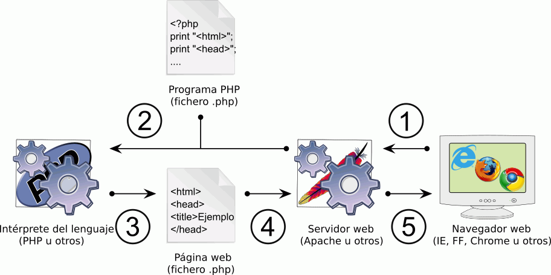

PHP es un lenguaje de programación dirigido a la creación de páginas web. Es un lenguaje de programación procedural con una sintaxis similar a la del lenguaje C, aunque actualmente puede utilizarse una sintaxis de programación orientada a objetos similar a la de Java. En esta página se tratan los temas siguientes:
La World Wide Web (o simplemente, la web) fue ideada por Tim Berners Lee en 1990, empezó a funcionar en el CERN en 1991 y se extendió rápidamente por las Universidades del mundo (en aquel entonces Internet era una red a la que sólo tenían acceso entidades gubernamentales, particularmente entidades educativas). En 1992 algunos proveedores comerciales empezaron a dar acceso a particulares y empresas, lo que convirtió la web en una red de comunicación universal que ha transformado nuestras vidas.
En sus primeros años, las páginas web solían ser documentos de texto guardado en algún directorio de un servidor y a las que se accedía mediante los primeros navegadores web. Cada página web que se veía en el navegador correspondía a un fichero en el servidor.
La imagen siguiente ilustra de forma simplificada el esquema de funcionamiento:
Este esquema de funcionamiento es suficiente para sitios web pequeños creados por una sola persona, pero en cuanto un sitio web empieza a crecer, empiezan a surgir los problemas. Por ejemplo:
La solución es que las páginas no sean ficheros estáticos guardados en el disco, sino que las páginas se generen automáticamente cuando el usuario las solicite.
Por ejemplo, para resolver el problema de los menús comentado anteriormente, una solución sería que el menú estuviera en un fichero aparte y cuando el usuario solicitara una página, el menú se añadiera al principio de cada página (nota: no me refiero a la composición de páginas mediante frames, una solución desaconsejada hace muchos años, sino a componer la página web a partir de varios ficheros).
Esa generación de las páginas se puede hacer de varias maneras. Una de ellas es recurrir a lenguajes de programación generales o específicos (como PHP). Desde sus inicios, los servidores web permiten recurrir a lenguajes de programación para generar las páginas web.
La imagen siguiente ilustra de forma simplificada el esquema de funcionamiento:

Es importante señalar que el usuario no puede saber si la página web estaba guardada en el disco duro o se ha generado en ese momento, de la misma manera que no puede saber qué lenguaje de programación que ha generado el documento. El navegador recibe el documento en ambos un documento de texto que contiene etiquetas html y lo muestra al usuario.
A veces, el usuario puede suponer que la página que se le está sirviendo se ha generado mediante PHP ya que la dirección de la página termina por .php en vez del habitual .html, aunque no se puede estar seguro de que sea realmente así.
Pero el uso de lenguajes de programación no suele ser suficiente. Si la información está diseminada en multitud de trozos para organizar y acceder fácilmente a toda esa información, es conveniente utilizar algún sistema gestor de bases de datos. Existen muchos sistemas gestores de bases de datos y los lenguajes de programación pueden conectarse a ellas y realizar consultas.
La imagen siguiente ilustra de forma simplificada el esquema de funcionamiento:
Como antes, el usuario no puede saber si se ha accedido o no a un sistema gestor de bases de datos. El navegador recibe el documento en ambos un documento de texto que contiene etiquetas html y lo muestra al usuario.
En el caso de PHP no hay ningún organismo oficial encargado de la definición del lenguaje PHP (dfinición que posteriormente distintas empresas implementan en diferentes compiladores o intérpretes), sino que el lenguaje evoluciona a la vez que lo hace el intérprete "oficial" de PHP publicado, desde la versión 4, por la empresa Zend. Existen otros motores, como HHVM creado por Facebook, pero son minoritarios. Aunque el lenguaje y el intérprete son cosas conceptualmente distintas, es habitual referirse a ambos como PHP.
PHP (el intérprete) ha sido publicado siempre como software libre, con una licencia llamada licencia PHP. Esta licencia es una licencia libre sin copyleft. Como la licencia impone restricciones al uso del término PHP en productos derivados, esta licencia es incompatible con la licencia GPL, por lo que la Free Software Foundation recomienda que sólo se utilice para programar extensiones del propio PHP.
PHP fue creado por Rasmus Lerdorf en 1995. El nombre PHP significaba entonces Personal Home Page y hacía referencia a que era un lenguaje diseñado para facilitar la generación de páginas web, en primer lugar en el sitio web personal de Rasmus Lerdorf y rápidamente en muchos sitios. Desde entonces, PHP no ha dejado de evolucionar, proporcionando nuevas características.
En noviembre de 1997 Rasmus Lerdorf publicó una segunda versión del lenguaje, PHP 2.
En junio de 1998 se publicó PHP 3. Esta versión fue creada por Zeev Suraski y Andi Gutmans, que desde entonces dirigen el desarrollo de PHP (con la colaboración de Lerdorf). A partir de esta versión PHP significa PHP: Hypertext Preprocessor (añadiendose a la lista de acrónimos recursivos como GNU, Lame, Wine, RPM, etc.). La característica más decisiva de esta versión fue la mejora de la la extensibilidad del lenguaje, permitiendo que muchos programadores aportaran nuevos módulos, pero esta versión también simplificó la sintaxis del lenguaje e introdujo la posibilidad de utilizar una sintaxis orientada a objetos.
En 1999 Zeev Surski y Andi Gutmans crearon la empresa Zend Technologies, que desarrolla productos basados en PHP (servidores, editores, etc.).
En mayo de 2000 se publicó PHP 4, que incluía un nuevo motor llamado Zend Engine. Esta versión era bastante más rápida que la anterior y añade nuevas características como las sesiones.
En julio de 2004 se publicó PHP 5, que incluía un nuevo motor llamado Zend Engine 2. La característica más importante de esta versión fue la mejora de la programación orientada a objetos.
La siguiente versión prevista, que se tendría que haber publicado como PHP 6, se fijó el objetivo de dar a PHP soporte completo de Unicode, el juego de caracteres universal. Pero ese objetivo resultó ser mucho más difícil de conseguir de lo esperado y en 2010 se tiró la toalla.
Desde 2012, se fueron publicando anualmente versiones 5.X que fueron introduciendo novedades en el lenguaje (5.3 en junio de 2009, 5.4 en marzo de 2012, 5.5 en junio de 2013 y 5.6 en agosto de 2014).
En enero de 2014 se inició el desarrollo de PHP-NG, un nuevo motor de PHP enfocado a aumentar la velocidad del lenguaje. Los resultados fueron tan prometedores que en agosto de 2014 PHP-NG se convertió en la base de la siguiente versión de PHP, que se decidió llamar PHP 7 para evitar la confusión con la frustada versión PHP 6. PHP 7 se publicó en diciembre de 2015 y el motor PHP-NG se ha rebautizado como Zend Engine 3.
Inicialmente se propuso publicar una versión PHP 5.7, de transición entre PHP 5.6 y PHP 7, pero la propuesta fue descartada.
La intención es seguir publicando anualmente nuevas versiones de PHP. PHP 7.1 se publicó en diciembre de 2016 y la próxima versión, PHP 7.2, está prevista para noviembre de 2017. Cada una de estas versiones se mantendrán durante tres años, durante los cuales se publican mensualmente actualizaciones de seguridad (que se numeran con una tercera cifra, 7.0.X, 5.6.X, etc.)
Desde sus inicios, PHP ha sido posiblemente el lenguaje más utilizado en entornos de desarrollo web, y desde 2001 está situado en el Top 10 del índice Tiobe de lenguajes de programación.
Para construir sitios web profesionales y no tener que escribir todo desde cero, se suelen utilizar frameworks de programación o, incluso si no se quiere programar, se suelen utilizar CMS (Content Management System, Sistema de gestión de contenidos). Muchos de los frameworks y CMS más populares están escritos en PHP.
Como cualquier lenguaje de programación, es fácil encontrar en la web opiniones muy críticas hacia PHP, sobre todo en referencia a la seguridad. Al leer estas críticas hay que tener en cuenta que:
En la lección de documentación se incluyen referencias a críticas razonadas a PHP.
Las palabras reservadas (keywords) de un lenguaje de programación son las palabras propias del lenguaje. En general, estas palabras no se pueden utilizar para denominar a los elementos que puede crear el usuario (variables, funciones, clases, etc.). Los lenguajes de programación suelen tener pocas palabras reservadas y la mayoría de los programas utiliza un número muy reducido.
Las palabras reservadas de PHP son las siguientes (se han marcado en negrita las que se utilizan en este curso):
__halt_compiler() abstract and array() as break callable (PHP 5.4) case catch class clone const continue declare default die() do echo else elseif empty() enddeclare endfor endforeach endif endswitch endwhile eval() exit() extends final finally (PHP 5.5) for foreach function global goto (PHP 5.3) if implements include include_once instanceof insteadof (PHP 5.4) interface isset() list() namespace (PHP 5.3) new or print private protected public require require_once return static switch throw trait (PHP 5.4) try unset() use var while